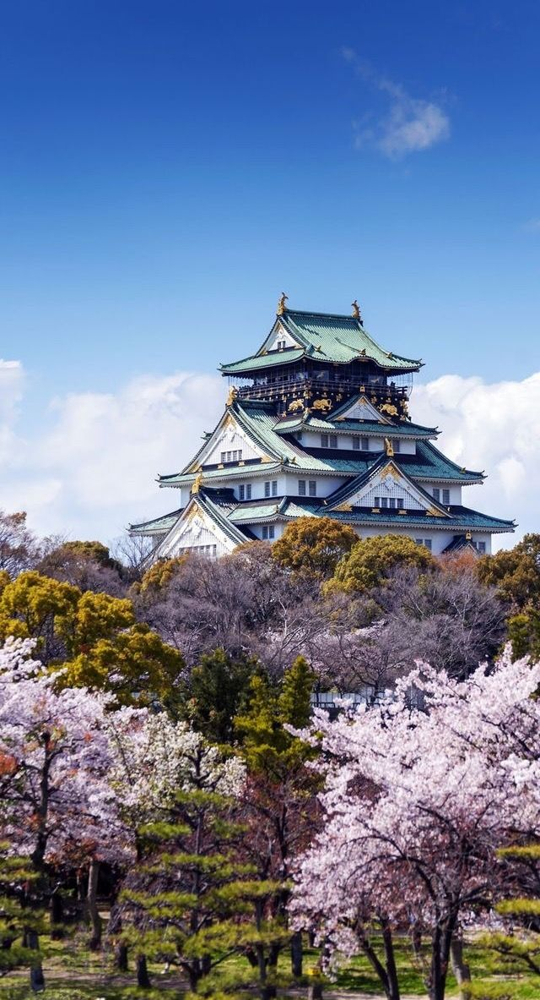
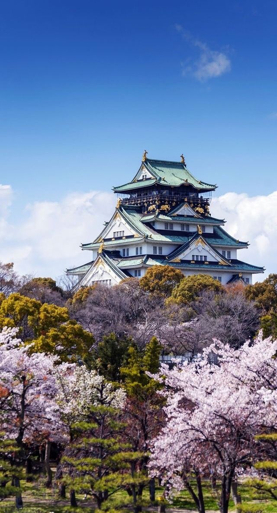

Japan is an island nation located in East Asia
Japan is an island nation located in East Asia
Welcome to our platform, where history, culture, and innovation meet! Explore the rich heritage of ancient civilizations, witness the resilience of human progress, and dive into the stories that have shaped our world. Whether you're fascinated by early societies or modern advancements, we invite you to embark on a journey of discovery and learning. Stay curious, stay inspired, and enjoy your exploration with us!
Here are lots of interesting destinations to visit,
but don't be confused-they're already grouped
by
category

 



Japan's early history dates back to the Jomon period (14,000 BC-300 BC) with a hunter-gatherer society known for pottery. The Yayoi period (300 BC-300 AD) introduced rice cultivation and metalworking, while the Kofun period (300-538 AD) saw the rise of powerful clans. Buddhism arrived in the 6th century, shaping Japanese culture and governance during the Asuka and Nara periods. The Heian period (794-1185 AD) was a cultural golden age.
Feudal Japan emerged in the 12th century, with samurai and shogunates ruling. The Tokugawa Shogunate (1603-1868 AD) brought peace and isolation until Western powers forced Japan to open in the mid-19th century. The Meiji Restoration in 1868 led to rapid modernization. Japan became a world power, expanding its empire in the early 20th century but faced defeat in World War II. Today, Japan is a major economic and technological hub.